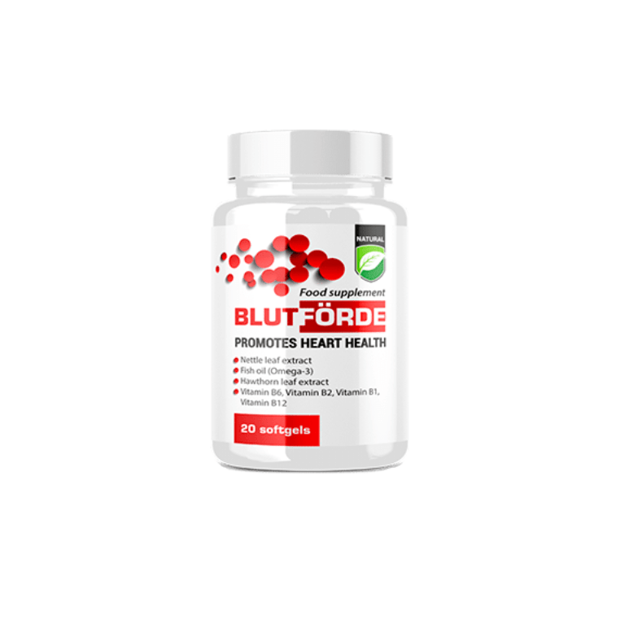
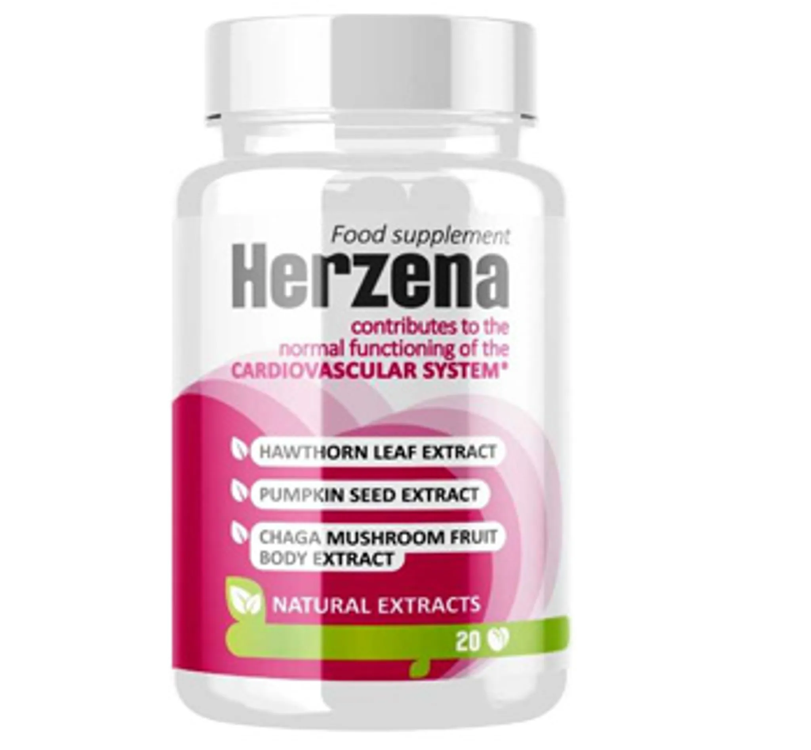
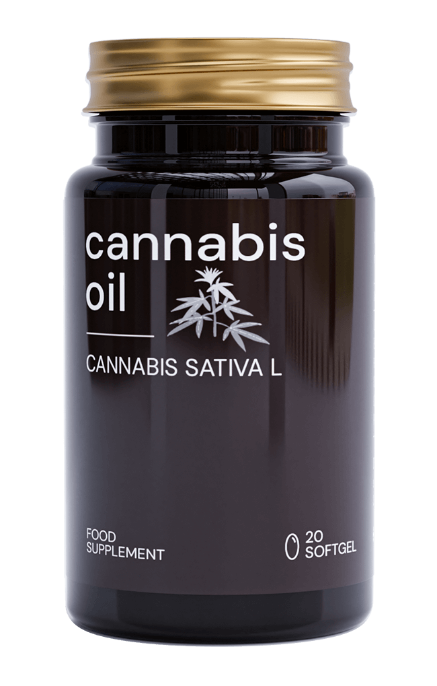
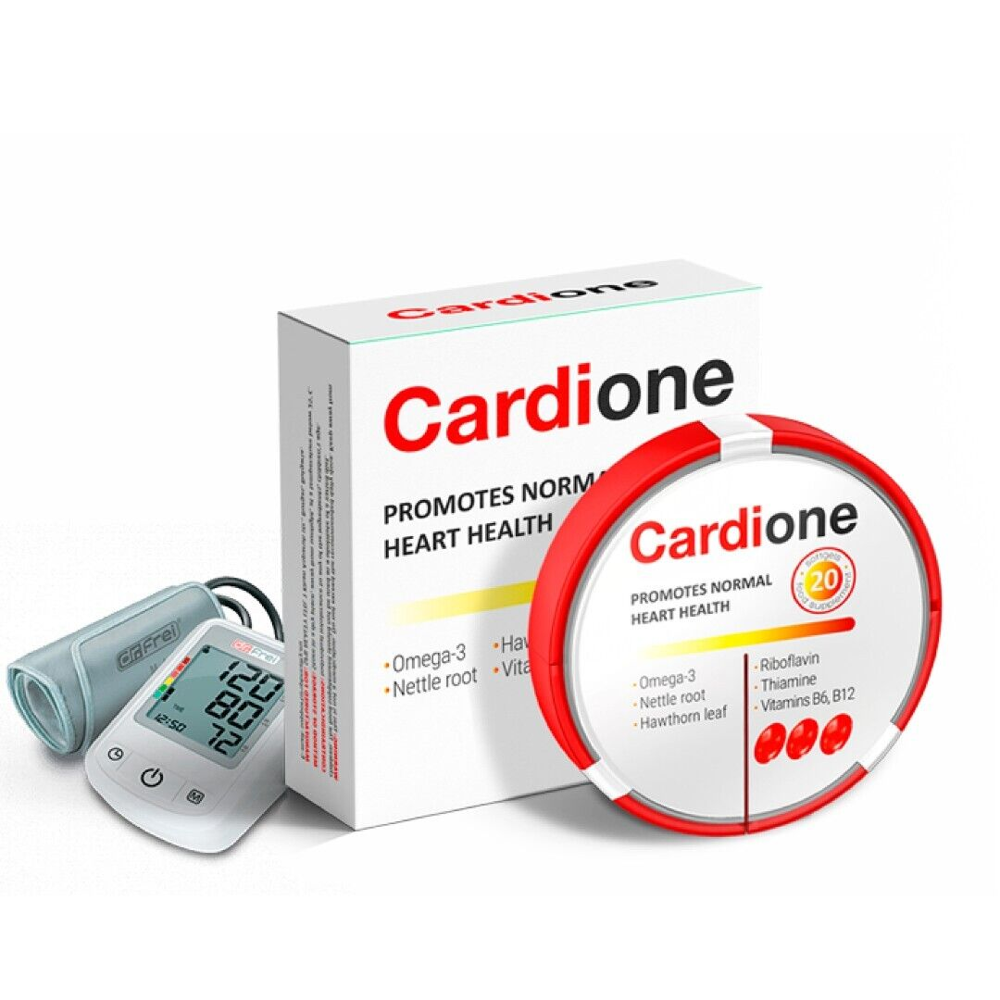

Miért fontosak a szív- és érrendszeri támogató termékek?
A kardiovaszkuláris egészség alapvető fontosságú az általános jólét szempontjából. Az alábbi természetes termékek támogathatják a szív és az érrendszer egészséges működését, hozzájárulhatnak a vérnyomás és koleszterinszint egyensúlyban tartásához, valamint elősegíthetik a jó közérzetet.
Összegyűjtöttük és alaposan értékeltük a piacon elérhető legjobb termékeket, hogy segítsünk Önnek a megfelelő választásban.
Értékelési szempontjaink
- Összetevők minősége
- Kutatási háttér
- Felhasználói visszajelzések
- Ár-érték arány
- Gyártási eljárás
TOP 5 termék rangsorolása

1. Blutforde
A Blutforde egy innovatív német formula a magas vérnyomás természetes szabályozására. Egyedülálló hatékonyságát a gondosan kiválasztott gyógynövény kombinációnak köszönheti, amelyek szinergikus hatása klinikailag igazolt eredményeket mutat.
Előnyök:
- Klinikailag igazolt hatékonyság
- 100% természetes összetevők
- Nincsenek mellékhatások
Hátrányok:
- Magasabb árpont
- Csak online kapható

2. Herzena
A Herzena egy egyedülálló, svájci fejlesztésű, kifejezetten a szívizom egészségének és működésének támogatására kifejlesztett természetes étrend-kiegészítő, amely a hagyományos gyógynövények erejével működik.
Előnyök:
- Szívspecifikus komplex formula
- Klinikailag igazolt hatékonyság
- Svájci minőség
Hátrányok:
- Prémium árkategória
- Lassabb hatáskialakulás

3. Cannabis Oil Hypertension
A Cannabis Oil Hypertension egy speciálisan fejlesztett CBD olaj formula, mely célzottan a vérnyomás szabályozására és a stresszoldásra koncentrál, garantáltan THC-mentes.
Előnyök:
- Többirányú hatás a vérnyomásra
- Javítja az alvásminőséget
- Csökkenti a stresszt
Hátrányok:
- Kissé keserű íz
- Relatíve magas ár
- Egyénenként változó hatás

4. Cardione
A Cardione egy komplex, többirányú hatással rendelkező olasz készítmény, amely kombinálja a mediterrán gyógyászat előnyeit a kardiovaszkuláris rendszer átfogó támogatására.
Előnyök:
- Többirányú kardiovaszkuláris támogatás
- Európai minőség
- Tudományosan alátámasztott hatóanyagok
Hátrányok:
- Viszonylag magas ár
- Halolaj összetevő (allergének)
- Teljes hatás csak 1-2 hónap után

5. Tonerin
A Tonerin egy átfogó kardiovaszkuláris támogató komplex, amely több hatóanyag kombinációja révén támogatja a szívizom megfelelő működését és az érfalak egészségét.
Előnyök:
- Átfogó szív- és érrendszeri támogatás
- Jól dokumentált hatékonyság
- Több hatásmechanizmus
Hátrányok:
- Napi rendszerességű szedés szükséges
- Csak online rendelhető
Összegzés
A fenti termékek mindegyike természetes módon támogathatja a szív- és érrendszer egészségét, azonban a Blutforde kiemelkedik a sorból összetételével, bizonyított hatékonyságával és magas felhasználói elégedettségével.
Fontos megjegyezni, hogy bármilyen táplálék-kiegészítő használata előtt érdemes konzultálni szakemberrel, különösen, ha már meglévő egészségügyi problémákkal küzd vagy más készítményeket is szed.